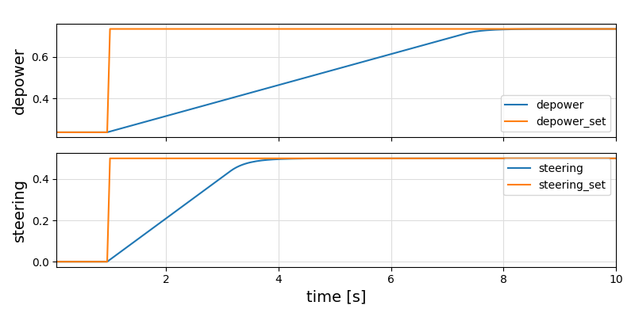

KitePodModels
Documentation for KitePodModels.
Background
A kite pod or kite control unit consists of one or two electric miniatur winches, that pull on two or three lines (attached to the kite) and allow to steer the kite and to change the angle of attack and thus the lift.
This software acts as controller: It has two inputs, the set values, and two outputs, the actual values.
Two P controllers are used.
The geometric nonlinearity due to the change of the effectiv drum diameter of the drum with the depower tape is taken into account.
Installation
Download Julia 1.9 or later, if you haven't already. You can add KitePodModels from Julia's package manager, by typing
using Pkg
pkg"add KitePodModels"at the Julia prompt.
If you are using Windows, it is suggested to install git and bash, too. This is explained for example here: Julia on Windows .
Testing
You can run the unit test suite with the following command:
pkg"test KitePodModels"Provides
- functions to initialize the simulator, to update the set values and to read the actual values
- a function on_timer() that needs to be called once per time step
- a function to convert the actual depower value into change of angle of attack
Step response

Click on Functions on the left to see the exported functions.
Related
- The meta package KiteSimulators which contains all packages from Julia Kite Power Tools.
- the package KiteUtils
- the packages KiteModels and WinchModels and AtmosphericModels
- the packages KiteControllers andKiteViewers
Author: Uwe Fechner (uwe.fechner.msc@gmail.com)